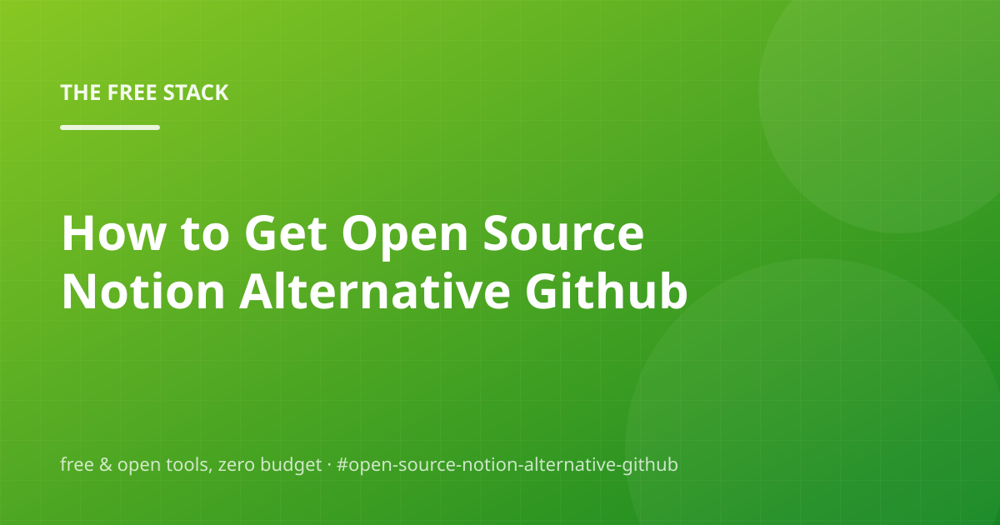

How to Get Open Source Notion Alternative Github Without Spending a Dollar

Here's the premise: open source notion alternative github should cost nothing to get started. Between open-source projects, free API tiers and self-hostable tools, it can. Below is the working setup we actually use, plus the gotchas we hit.
We'll walk through Appflowy, Affine, N8n Workflow Automation, and Activepieces — and finish with the questions people actually ask, so you can check before you buy anything. You shouldn't have to buy anything.
Appflowy
Here's the part most people get wrong. AppFlowy is an open-source Notion alternative you can run locally or self-host, free.
Which, in day-to-day terms, means: Documents, databases, kanban and wiki-style workspaces, with data stored where you choose — local files or your own server. It is the standard answer to 'Notion but open source', and it is genuinely maintained.
Keep it this simple and you'll be ahead of most tutorials out there.
Affine
The short version: Affine is another open-source Notion/Miro hybrid: documents, edgeless canvas, and self-hosting in the community edition.
In practice that means: It leans into 'everything is a block' and lets the same content be a doc or a whiteboard. Self-hosting runs through Docker Compose, and the community edition's free tier is generous for individuals and small teams.
For a personal project or side business, this covers you without breaking a sweat.
N8n Workflow Automation
First, the thing that actually matters: n8n is a workflow automation tool in the spirit of Zapier that you can self-host for free.
In practice that means: It is fair-code (not strictly open source, which the project is upfront about) and runs entirely on your own machine with a Docker container. The free personal use is unlimited; teams pay only when they outgrow the hobby tier. For a blog it handles the glue: fetch, transform, publish, notify.
If you only do one thing today, make it this one.
Activepieces
First, the thing that actually matters: Activepieces is an open-source automation platform — a genuine free alternative to Zapier and Make.
So what does that look like when you're actually doing it? You build visual flows or write pieces in TypeScript, and it runs self-hosted under a license that allows free personal and commercial use. Like n8n it turns 'I do this manually twice a week' into a node on a canvas.
The links in the sources section go straight to the primary docs.
Frequently asked questions
What would you do first if you only had one free afternoon?
Mostly, yes. n8n is a workflow automation tool in the spirit of Zapier that you can self-host for free. The catch is usually scale or politeness: rate limits, bandwidth caps, or the fine print of the free tier.
Is open source notion alternative github actually free?
Less than you'd think. n8n is a workflow automation tool in the spirit of Zapier that you can self-host for free. Start there and only add pieces when you feel actual pain.
What are the real limitations of open source notion alternative github?
The honest answer: Activepieces is an open-source automation platform — a genuine free alternative to Zapier and Make. The catch is usually scale or politeness: rate limits, bandwidth caps, or the fine print of the free tier.